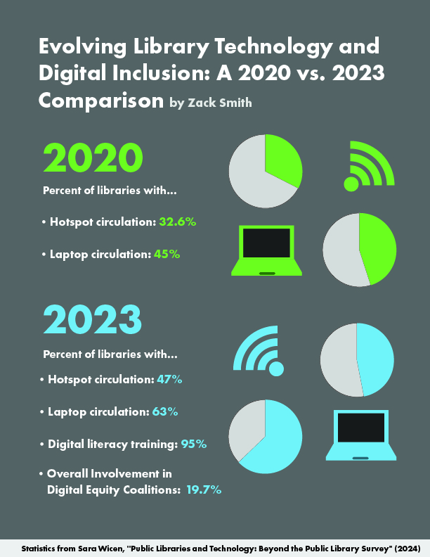

In our Digital Inclusion course, we have discussed how the internet and technology are essential for everyday life. However, not everyone has equal access to these resources. Public and college libraries help close this gap by providing free access to computers, the internet, and training programs. During Week 3, we learned about the role libraries played when many were closed during the pandemic, showing just how important they are to people who need these resources. For my project, I will explore how libraries contribute to digital inclusion, especially by offering technology access and teaching digital skills. I will also look into the challenges libraries face, such as limited funding and outdated technology. My research will highlight why libraries are crucial for digital inclusion and the issues they must overcome to support their communities.
Public and college libraries face various challenges in promoting digital inclusion. Some of the key barriers include:
Addressing these challenges is essential to ensuring equitable access to digital resources for all members of society.
Libraries can offer a wide range of resources to support digital inclusion, including:
At WSU and the Pullman Public Library, resources such as public computers and study rooms with internet access provide students with the tools needed to succeed in their academic and personal endeavors.
Below is an infographic that highlights statistics about how libraries contribute to digital inclusion, as well as the barriers they face:
Here are the sources I used in my research: